The One Handed Topspin Backhand-Introduction¶
The One-Handed Topspin Backhand
Introduction
John Yandell
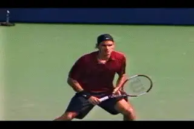
The modern one-hander: beautiful, versatile, powerful.
I think it's the most beautiful stroke in tennis: elegant, minimal, versatile, and deceptively powerful. I'm talking about the one-handed topspin backhand drive. I've always loved watching gifted players hit it, from Lew Hoad and Rod Laver to John McEnroe, Ivan Lendl, and Boris Becker, to Roger Federer and Richard Gasquet.
I know that I've been looking forward to turning my attention to this gorgeous and misunderstood stroke, to breaking it down into its technical components using the Advanced Tennis high speed footage ([]), and explaining how to build a great one-handed backhand from the ground up. We've got an incredible data base of high speed footage that includes over a dozen of the best one-handers in the world, something you won't find anywhere else in the world, so let's get started.
Classic Versus Extreme
One of the main issues we'll explore is the distinction between the so-called classic backhand and the more extreme version pioneered by players such as Gustavo Kuerten and Justine Henin-Hardenne. What are the differences and the similarities between the two styles and how they are used by the top one-handers, starting with the grips? What about the backswings, the contact points, and the fundamental mechanics of the swing? Is the extreme backhand a good variation to use as a model? For what players and what levels?
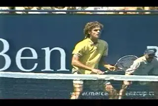
What separates the extreme from the classic one-hander?
My suspicion is that on TPA we have a significant number of adult subscribers who hit it the one-hander and want to understand it and hit it better. So in this new series of articles we'll see what the high speed footage really shows us about the stroke as executed by the most gifted players in tennis, starting with the grips.
A Little Background
But before we do, let's talk about an amazing anomaly when it comes to the role of the one-hander in tennis. This is the difference in the prevalence of the one-handed backhand in pro game as compared to other levels, especially the juniors. Look around in competitive junior tennis. Is it 100% two-handed backhands? No, but close. Now look at the pro tour in 2006. Federer. Ivan Lujubicic. James Blake. Tommy Robredo--four of the top ten men's players are one-handers. It's seven of the top 20 when you add Fernando Gonzales, Tommy Haas, and Gaston Gaudio.
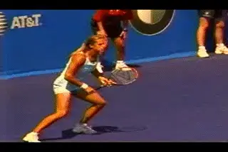
Many top pro women are one-handers--but very few juniors.
On the women's side, two of the top ten players are also one-handers: Justine Henin-Hardenne and Amelie Mauresmo. Add Francesca Shiavone and that makes 3 of the top 20. Very few junior boys hit with one-hand. And you virtually never see a one-handed player in the junior girls.
Why are there almost no one-handers in the juniors? The cold reality is that virtually all junior players are going to do better competitively with two-hands, at least in the short run, early in their careers. Players are starting at age 6, immediately focusing on tournaments, and there almost isn't a choice for these kids. Even Pete Sampras had a two-hander until he was 14.
Most junior players aren't going to be strong enough until they are in their early teens to hit with one-hand. At least with full size balls and rackets. And maybe a revisioning of the junior game is what it would take to bring the one-hander back into the mainstream. (On this point, see Paul Lubbers second article on player development in this issue. [].)
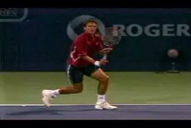
How do you weigh the pluses and minuses of the one-hander in junior development?
When I was in the juniors in the 1960s, I think I was lucky because the two-hander literally did not exist. We all struggled with wood rackets, and generally learned to hit slice backhands. It was much more difficult to come over the ball, and most kids in those days simply weren't strong enough to even try.
The result was that we learned to drive the ball with slice on the model of Ken Rosewall. (It's not coincidence that this month we also have a great article on the slice drive from my old friend Trey Waltke, [].) Now at age 50 I'm quite grateful for that. I see a lot of players who played with two-hands in the juniors and who are now in their 30s and 40s, and struggle to hit the two-hander at the same level as the rest of their games. A lot them now look like they might have been natural one-handers all along. But their junior rankings probably wouldn't have been as high, at least in the younger age divisions.
Pluses and Minuses
How do you weigh the pluses and minuses of all that? As a coach you are teaching a promising kid and you tell him this: "I think you are a natural one-hander! You may not be able to hit a backhand as well as most kids for the next 5 years or longer, and you'll probably lose to less talented players because of that, but believe me, you'll thank me in the long run. Since there is almost no chance you'll ever be a pro, when you are 30 or 40 you'll be really glad you learned with one hand."
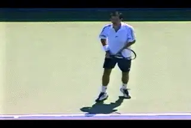
In many ways the one-hander is technically simpler than the two-hander.
Think that as a teaching pro you can sell that to the average tennis parent? Most parents will conclude you are insane, and instantly go looking someone who will teach their kid to hit a two-handed topspin backhand, so they can start winning now. That's the view that is dominating the way young players are developed. There is no getting around the fact that it takes some minimum amount strength to hit a topspin drive with one hand. But assume the player has or gains this basic minimum strength, even then, it's unlikely their one-hander will ever be as big a shot as their two hander, let alone their forehand. I've seen juniors with decent, technically solid one-handers--nothing wrong at all--and they switched to two-hands because they were getting pounded in tournaments on the backhand side by kids hitting heavy topspin inside out forehands that bounced up over their shoulders.
So is there an upside? I mean besides how great the shot looks, and how great it feels to hit? Definitely. First the motion is in many ways technically simpler than a two-hander. There is less body rotation, and also less variation in the movement and rotation of the hands and arms. There is also the versatility factor. Players with one-handed backhand drives are generally much more natural and more effective hitting slice and at the net.
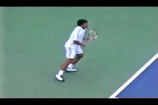
One handers are more natural with the slice and at the net.
If you look at the pro game there have been very few if any great volleyers with two-handed backhand groundstrokes. Why? Because the backhand volley is hit with one hand and is fundamentally similar to the one handed groundstroke. If you spend most of your time hitting thousands of groundstrokes with two hands, there is no way you are going to be as natural with one-hand at the net. That's just a fact.
For the same reason, one-handers also tend to be much better with the slice, which obviously, is also hit with one hand. So the trade off is this. With two hands in the juniors, you gain a more solid, powerful backhand, and you develop it faster. You get the ability to rally indefinitely and hold your own in the back court on both sides. But you may lose the opportunity to become a natural volleyer, a true attacking player, or even or a balanced, all court player.
As for the Rest of Your Life?
And when you are older and it turns out you didn't make it on the pro tour, what does it all mean then? What if you spend the last 20 or 30 years of your tennis life playing doubles, where you have to be at the net at least half the time, and a lot more if you want to win many matches? Well, it's a problem, because your approach and your volley are probably nowhere near the level of the rest of your game.
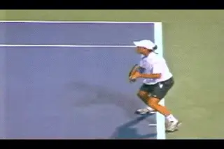
The one-hander has more than survived at the top of the pro game.
Now maybe temperamentally you are a grinding backcourt player, and you don't want to go near the net ever, even at age 75. Maybe you hate doubles. But how many players base the decision on any sense of the long term implications, rather just than blindly following conventional wisdom--or having it forced on them by parents or coaches?
And I'm right there with the rest of the coaches. I admit it. We teach the two-hander first at my summer junior camp in San Francisco. About the only thing I can say in my own defense is that when I see a kid who seems really dominant with his racket arm, I'll experiment with shifting to one hand--and some kids take to it instantly. But otherwise I let them stick with the two. It just seems too cruel to see little kids who love tennis and have little or no chance of even rallying on the backhand side with one hand.
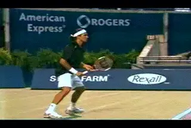
\ Haas and Federer: examples of the classical style.It'd be great if young two-handed players experimented with the one-hander in their mid to late teens, but that's not really the way it works. It's too difficult and too scary to make the change. You'd have to have the driven vision of someone for example, like Pete Sampras.
But whatever the limitations of the one-hander in junior tennis, it's obvious that the one-hander has survived, and will survive. Somehow some of the greatest players in the game have gotten through the juniors and to the top of the pros hitting it. It would be really interesting to chronicle the development of players like Federer, or James Blake or Richard Gasquet, etc and see how that happened. And maybe we will research that for another article. But for now let's turn to trying to understand how they hit the shot, and how to develop it from the ground up.
Grips
The first distinction we have to make to understand the two predominant versions in the modern pro game is the differences in the grips.
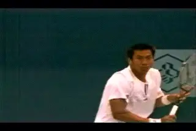
The extreme backhand begins with an extreme grip.
Basically the grips fall into two categories, Classic and Extreme. There are some minor variations within these two broad categories, but compared to the forehand the variations and how they affect the shot are fewer, and I think less complex. There are two basic swing styles, and even these have many core elements that are identical or near to it.
Some of the players who use classic grips are Tim Henman, James Blake, Mark Philippoussis, Tommy Haas, and Roger Federer. Players who use more extreme grips include Gustavo Kuerten, Fernando Gonzales, Gaston Gaudio, Tommy Robredo, Paradorn Srichaphan, and Richard Gasquet. Surprisingly, the list of extreme grip players also includes the top two women's players, Justine Henin-Hardenne and Amelie Mauresmo.
So what's the difference in the grips? Basically, the classic players have most of the hand on the top of the racket. When the extreme players make the grip shift, they rotate the hand further. Rather than stopping when most of the hand is on top of the handle, they continue to rotate until part of the palm is actually positioned behind the handle.
Let's use the grip terminology we developed with the forehand to describe the differences. Remember we labeled the bevels on the racket handle from 1 to 8 starting with the top bevel and moving clockwise. We've also identified the two key points on the hand, as the index knuckle and the center of the heel pad.
How do the hand and the racket align in the modern one-handed topspin backhand?

The 8 bevels (left) and the 2 key points on the hand (right).

With the classic grips, the index knuckle can be in the center of bevel 2, with the heel pad on bevel 1. This would be a 2 / 1 in our new terminology. Tim Henman, James Blake, or two good examples. This is the mildest form of the classic grip.
But the index knuckle can also rotate further toward the top of the racket, so that it is centered on the top bevel, the same as the heel pad. This is a 1/ 1. That's Roger Federer's grip as well as Mark Philippoussis. The index knuckle can also be on the edge between bevel 1 and 2. We can call that grip a 1 1/2 / 1. Max Mirnyi and Tommy Haas are good examples here.
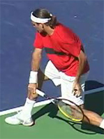
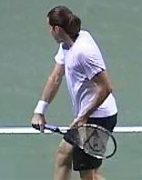
3 Variations of the Classic Grip
Haas and Mirnyi with the knuckle on the edge between bevel 1 and bevel 2.
Heman and Blake with the knuckle centered on bevel 2.
In all three classic variations, the grip structure places the bulk of the palm of the hand on the top of the frame. If you create a 1 / 1 grip and then turn your hand over and open the fingers, you'll see that top bevel runs almost exactly from the index knuckle through the center of the lower heel pad. The 2 / 1 variation means that a bit more of the hand remains positioned over the second bevel. The 1 1/2 / 1 is in between. As we'll see in future articles, the classic players have more in common with each other than the players who make the more extreme shift.
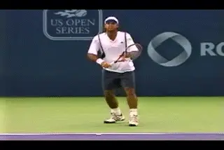
More and more top one-handers are using the extreme variations.
Extreme Grips
The extreme grip on the one-handed backhand appeared front and center in the modern game with the emergence of Gustavo Kuerten in the mid-1990s. Justine Henin-Hardenne was not far behind. Since then the pace has accelerated with more and more of the top one-handers using the more extreme grip variation.
With the extreme grip the rotation of the hand continues past the classical grip position. Instead of the hand remaining partially or mainly on top of the handle, the rotation of the grip continues further, so that part of the hand actually goes over the top, or past the top bevel. This rotation can continue until both the index knuckle and the center of the heel pad are positioned primarily on bevel 8. According to our new grip terminology, that would be an 8 / 8. Guga goes that far as does Heinin Hardenne. It also appears to be the positioning used by Gaston Gaudio.
![A person playing tennis Description automatically generated with medium
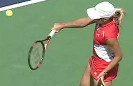
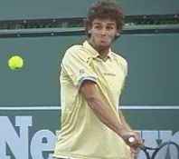
Justine and Guga rotate the hand until the index knuckle and heel pad are partially behind the handle on bevel 8.
With other players, the knuckle appears that it may be more on the edge between bevel 8 and bevel 1. We can call that grip an 8 1/2 / 8. Players like Richard Gasquet, Fernando Gonzales and Paradorn Srichaphan seem to use this slightly milder version. As I've noted a few times before, the exact positions of our key points are sometimes difficult to nail down even with all the video we have to study.
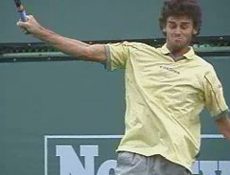
Some extreme player, like Gasquet, Srichaphan, and Gonzales appear to rotate the index knuckle a little less over the top, stopping at the edge between bevel 8 and bevel 1.
But with these players as with the other extreme grip examples, a substantial part of the hand has still shifted over the top and behind the handle. This is the characteristic--moving some of the hand behind the handle that defines the extreme variation. We can see this in the swings which share technical elements that distinguish them from the classical grip players.
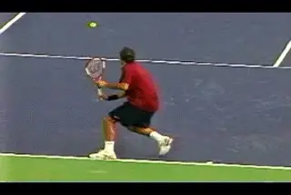
Next we'll explore the differences and similarities in the two versions.
Consequences
So what are differences between the classical and the extreme grips in terms of the swings? Do the grips dictate the shape of the backswing? How do they affect the positioning of the contact point, the range of the contact height, the amount of hand rotation, and the ability to generate topspin? What are the structural differences?
Surprisingly the classic and extreme backhands share many core technical similarities. These include the role of the body turn in the preparation, the shape of the hitting arm, the role of the opposite arm, and the variations in the stances, among other factors. All these issues deserve detailed discussion, and we'll start to address them all in Part 2. Stay Tuned.

John Yandell is widely acknowledged as one of the leading videographers and students of the modern game of professional tennis. His high speed filming for Advanced Tennis and TPA have provided new visual resources that have changed the way the game is studied and understood by both players and coaches. He has done personal video analysis for hundreds of high level competitive players, including Justine Henin-Hardenne, Taylor Dent and John McEnroe, among others.
In addition to his role as Editor of TPA he is the author of the critically acclaimed book Visual Tennis. The John Yandell Tennis School is located in San Francisco, California.
← Pro Women's Backhand Stances | Advanced Tennis Index | The Grip Shift and Unit Turn →